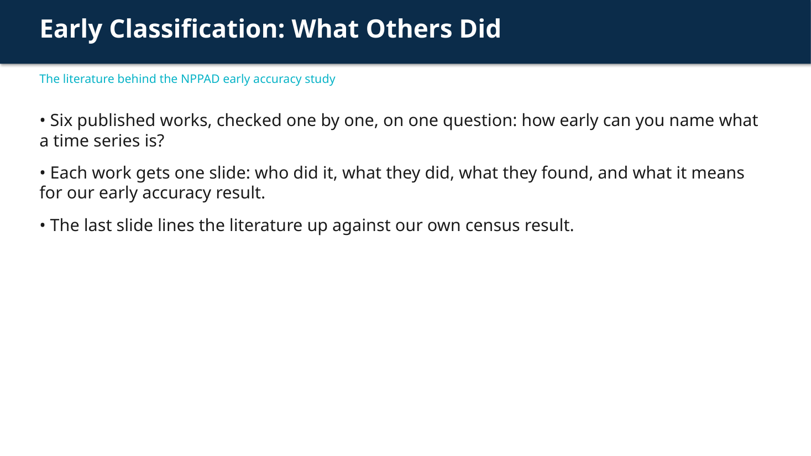
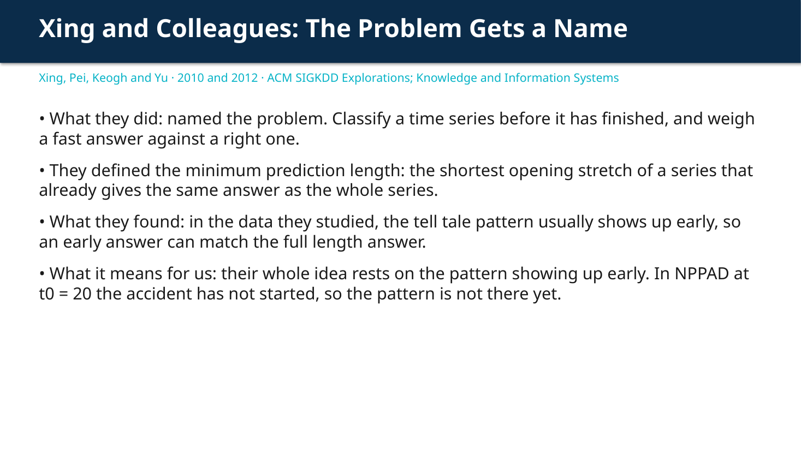
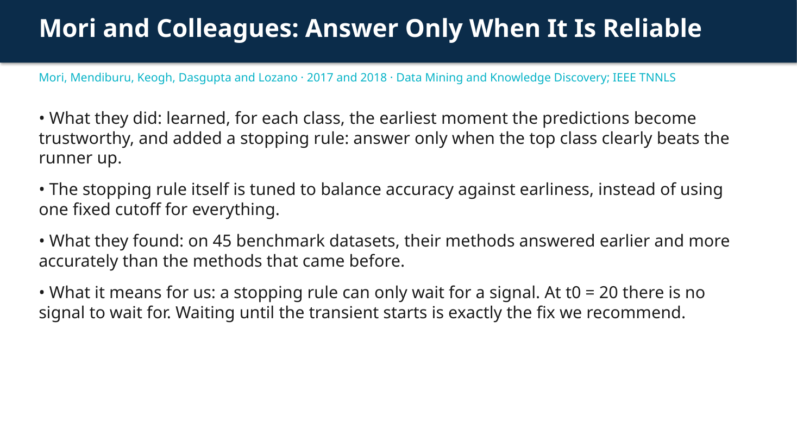
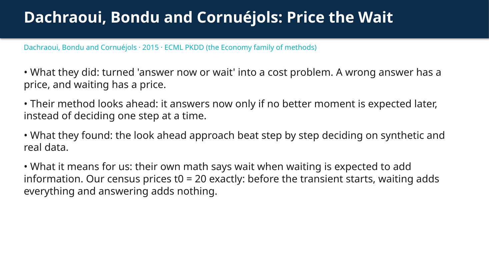
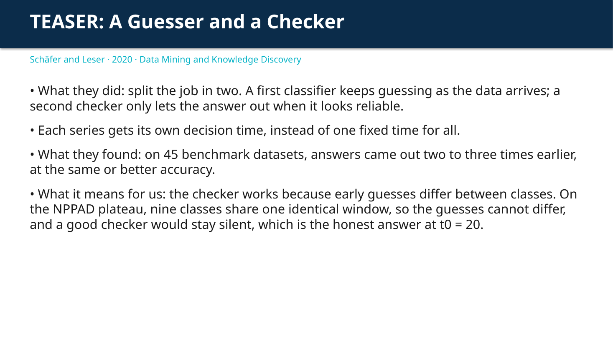
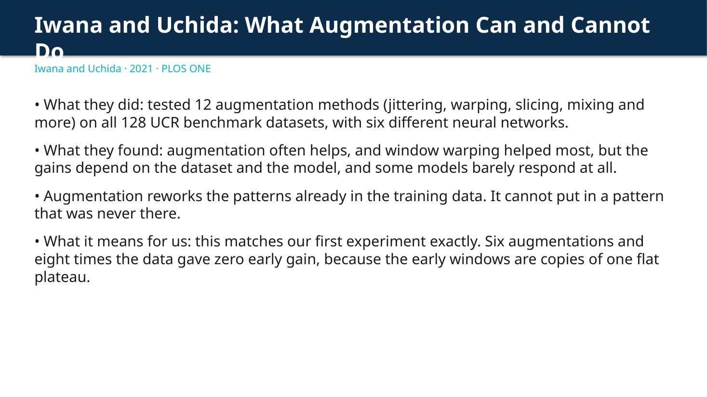
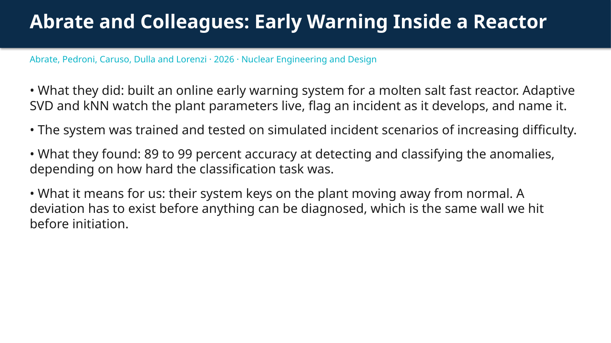
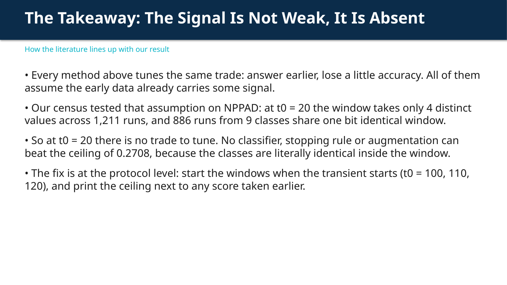

So the early window does not contain twelve accidents taking shape. It contains a handful of identical starting plateaus, shared across accidents that have not begun yet. Everything below follows from that one fact.
The first idea was a data idea: maybe the early score is low because the training set is small and slightly uneven. So the training windows — and only the training windows — were grown with six augmentation techniques, until every class had exactly the same count. Each technique below is named exactly as recorded in the experiment file; the plain-words line says what it does.
Read the table plainly: balancing changed nothing, and the full augmentation changed nothing either — the headline scores are identical, not merely close. The augmented MiniRocket did change some of its guesses (it swapped which of two look-alike classes it named), but the total never moved.
To show the machinery itself works, the same augmentation was also run at onset, where the accident is already visible in the window. There it helps the CNN clearly and is roughly neutral for MiniRocket — augmentation works when there is signal to work with.
Four simple measurements on the windows themselves, early against onset. Each row says in plain words what the measurement means.
In short: at t0 = 20 the classes have barely separated, so there is almost no class signal in the window for any method to amplify. The early ceiling is an information problem, not a data-volume or class-balance problem.
The second experiment attacked from the information side: different features, different channel sets, a two-stage classifier, augmentation again, and one deliberate cheat. The plain-words line under each arm says what it does. Three arms marked as variants step outside the study's channel set on purpose — they are flagged, not hidden.
Every single arm lands on exactly the same scores. The next panel shows why that is not a modelling failure: it is arithmetic.
Open an arm to read its recipe, exactly as recorded in the experiment file.
Counting the distinct early windows across every run gives four values in total. Here is who shares each one:
A deterministic classifier can give only one answer per distinct window, so the best anyone can score is the largest class inside each window, added up. That ceiling is exactly what the baseline already scores — the trained models had quietly learned the ceiling mapping, and the lookup-table cheat reaches it by construction. Per class, only LOCA is truly identified early (its plateau is unique); the other scores below are the majority picks inside the shared windows, and eight classes necessarily score zero.
Six published works on classifying early, checked one by one: who did it, what they did, what they found, and what it means for the result above. The whole field tunes one trade, answer earlier against answer right, and every method assumes the early data already carries some signal. Our census is the check of that assumption. The slides are below; the deck itself is here: download the literature slides (PPTX).
NPPAD stands for Nuclear Power Plant Accident Data. A team at Tsinghua University (Qi, Xiao, Liang, and colleagues) built it with the PCTRAN plant simulator and released it openly in Scientific Data in 2022, so that accident diagnosis methods could be compared on the same data: simulated pressurized water reactor accidents, 96 plant readings every 10 seconds. Our study uses 1,211 of its runs across 12 accident classes. The same team then kept working on this data. Xiao and colleagues (Energies, 2024) built DeepLOCA-Lattice, testing plain deep learning models (MLP, RNN, CNN, and a Transformer) on telling LOCA breach sizes apart; with careful dataset construction, even these basic models passed 90% accuracy, up from under 50% before, and longer windows with a smaller step between windows scored best. Qi and colleagues (Progress in Nuclear Energy, 2024) used multimodal learning with large language models to identify which transient is happening, and in 2025 the same group built a transient detector that pairs a digital twin of normal operation with zero-shot learning, checked on the HTR-PM full-scale simulator.
Every one of these works reads data from a transient that has already started to develop. Xiao and colleagues found accuracy rises when the window covers more of the transient, and the 2025 detector earns its speed by flagging a transient within two data collection intervals of the plant starting to change. None of them asks a model to name the accident from a window that ends before the accident begins. Our early window at t0=20 is exactly that case: it sits on the shared steady plateau before initiation, around TIME 100. Our census shows only 4 distinct windows across all 1,211 runs, with 886 runs from 9 classes sharing one identical window, so 0.2708 accuracy is a hard ceiling for any model. That fits the pattern in this literature, where the score follows how much real transient signal the window holds, and it extends it one step further: before initiation, the signal is not small, it is zero.
How each of these papers handled early accuracy:







